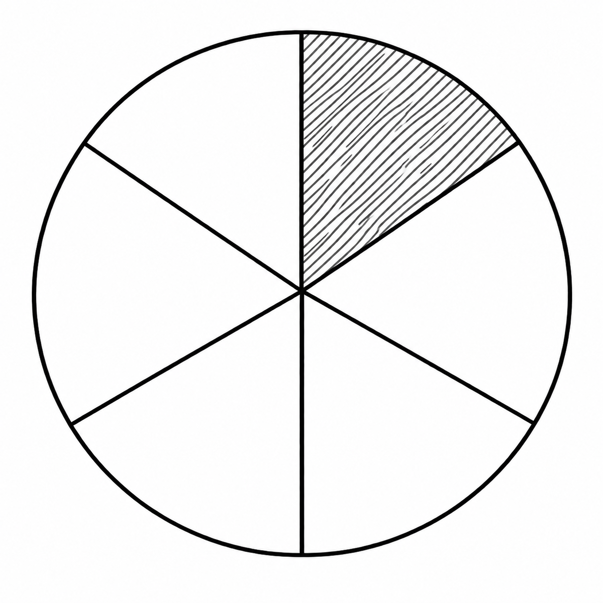
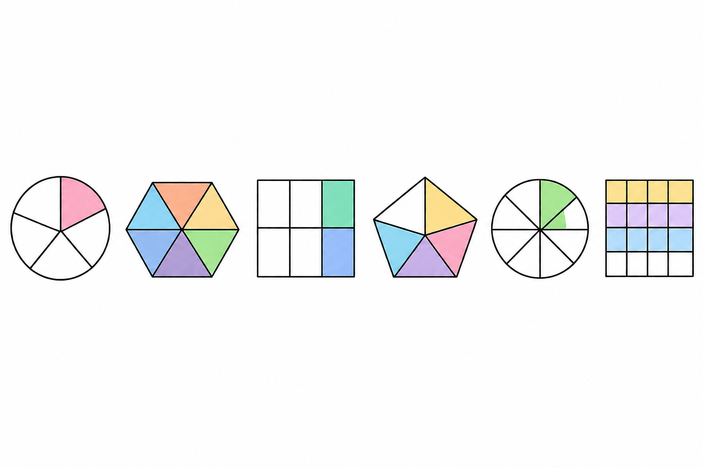

1 Η Έννοια του Κλάσματος
1.1 Κατανόηση του κλάσματος μέσω του χωρισμού του «όλου» σε μέρη
Θεωρία και Ορισμοί
Ετυμολογία: Η λέξη «κλάσμα» προέρχεται από το αρχαίο ελληνικό ρήμα «κλάω» ή «κλω», που σημαίνει κόβω ή τεμαχίζω κάτι.
Έννοια: Το κλάσμα δηλώνει ένα κομμάτι ή μέρος ενός πράγματος. Στα Μαθηματικά, το ολόκληρο («όλον») χωρίζεται σε ίσα μέρη.

Το οκτάγωνο είναι χωρισμένο σε 8 ίσα τρίγωνα, τα 3 στιγματισμένα μέρη είναι τα \(\dfrac{3}{8}\) όλου του πολυγώνου
Ο παρονομαστής δείχνει σε πόσα ίσα μέρη χωρίσαμε τη μονάδα.
Ο αριθμητής δείχνει πόσα από αυτά τα μέρη πήραμε.
Η κλασματική γραμμή συμβολίζει την πράξη της διαίρεσης.
Περιορισμός: Ο παρονομαστής δεν μπορεί ποτέ να είναι μηδέν (0).
Κλασματική μονάδα: Είναι το κλάσμα που έχει αριθμητή τη μονάδα (1), π.χ. \(\dfrac{1}{ν}\) , (όπου \(\nu \neq 0\)) και εκφράζει το ένα από τα \(\nu\) ίσα μέρη στα οποία χωρίστηκε μια ποσότητα.
Κλασματικός Αριθμός: Είναι το άθροισμα πολλών κλασματικών μονάδων. Συμβολίζεται ως \(\dfrac{κ}{ν}\), όπου \(\kappa\) και \(\nu\) είναι φυσικοί αριθμοί με \(\nu \neq 0\).
Όροι του κλάσματος:
- Παρονομαστής (\(\nu\)): Δείχνει σε πόσα ίσα μέρη χωρίσαμε το ολόκληρο.
- Αριθμητής (\(\kappa\)): Δείχνει πόσα από αυτά τα ίσα μέρη πήραμε.
- Γραμμή κλάσματος: Η γραμμή που χωρίζει τους δύο όρους.
 Στο σχήμα το κλάσμα μας \(\dfrac{3}{8}\) αποτελείται από τον αριθμητή \(3\) (πάνω), τον παρονομαστή \(8\) (κάτω) και την κλασματική γραμμή.
Στο σχήμα το κλάσμα μας \(\dfrac{3}{8}\) αποτελείται από τον αριθμητή \(3\) (πάνω), τον παρονομαστή \(8\) (κάτω) και την κλασματική γραμμή.
Ιδιότητες
Κάθε κλάσμα \(\dfrac{κ}{ν}\) μπορεί να γραφεί ως γινόμενο: \(\kappa \cdot \dfrac{1}{\nu}\).
Το ολόκληρο εκφράζεται όταν ο αριθμητής είναι ίσος με τον παρονομαστή (\(\dfrac{ν}{ν} = 1\)).
Παραδείγματα
Μια πίτσα χωρίζεται σε 8 ίσα κομμάτια· αν κάποιος φάει το 1, έχει φάει το \(\dfrac{1}{8}\) της πίτσας.
Μια σοκολάτα χωρισμένη σε 8 ίσα τετραγωνίδια.
Ένα τετράγωνο χωρισμένο σε 4 ίσα μέρη, όπου το καθένα είναι το \(\dfrac{1}{4}\) του όλου.
Ένα ευθύγραμμο τμήμα ΑΒ που χωρίζεται σε 4 ίσα μέρη.
Ένας κύκλος χωρισμένος σε 6 ίσα τμήματα.
Ποιος είναι ο αριθμητής και ποιος ο παρονομαστής στο κλάσμα \(\dfrac{4}{6}\);
Λύση: Αριθμητής είναι το 4 και παρονομαστής το 6.
- Γράψτε τη διαίρεση \(3:8\) ως κλάσμα.
Λύση: Το πηλίκο της διαίρεσης \(3:8\) εκφράζεται ως το κλάσμα \(\dfrac{3}{8}\).
- Αν χωρίσουμε μια πίτσα σε 5 ίσα μέρη και φάμε το 1, τι μέρος της πίτσας φάγαμε;
Λύση: Ο παρονομαστής είναι 5 (συνολικά μέρη) και ο αριθμητής 1 (μέρος που πήραμε), άρα φάγαμε το \(\dfrac{1}{5}\) της πίτσας.
- Ποιος φυσικός αριθμός είναι ίσος με το κλάσμα \(\dfrac{24}{6}\);
Λύση: \(24 : 6 = 4\). Άρα το κλάσμα ισούται με τον φυσικό αριθμό 4.
- Υπολογίστε το \(\dfrac{1}{5}\) του 20.
Λύση: Πολλαπλασιάζουμε το \(\dfrac{1}{5}\) με το 20: \(\dfrac{1 \cdot 20}{5} = \dfrac{20}{5} = 4\).
Ασκήσεις
- Γράψτε το κλάσμα που εκφράζει το χρωματισμένο μέρος ενός κύκλου χωρισμένου σε 6 ίσα μέρη.

- Ποιο κλάσμα ενός τετραγώνου αποτελεί ένα μέρος του αν χωριστεί σε 4 ίσα τμήματα;
- Σε μια τάξη 28 μαθητών, οι 4 είναι απόντες. Τι κλάσμα των μαθητών είναι οι απόντες;
- Αν χωρίσουμε ένα μέγεθος σε 10 ίσα μέρη, πώς ονομάζεται το ένα μέρος;
- Ποιος είναι ο αριθμητής και ποιος ο παρονομαστής στο κλάσμα \(\dfrac{3}{5}\);
- Σχεδιάστε ένα ορθογώνιο και χρωματίστε τα \(\dfrac{3}{4}\) αυτού.
- Γράψτε με μορφή κλάσματος την κλασματική μονάδα «ένα έβδομο».
- Από ποια κλασματική μονάδα αποτελείται το κλάσμα \(\dfrac{5}{8}\);.
- Πόσες κλασματικές μονάδες \(\dfrac{1}{4}\) χρειάζονται για να σχηματίσουν τη μονάδα;.
- Αν πάρουμε 5 τμήματα από μια ποσότητα χωρισμένη σε 7 ίσα μέρη, ποιο κλάσμα προκύπτει;.
1.2 Κατανόηση του κλάσματος ως σχέση μεταξύ ομοειδών ποσοτήτων
Θεωρία και Ορισμοί
Πηλίκο Διαίρεσης: Κάθε κλάσμα \(\dfrac{\kappa}{\nu}\) παριστάνει το ακριβές πηλίκο της διαίρεσης του αριθμητή διά του παρονομαστή (\(\kappa:\nu = \dfrac{\kappa}{\nu}\)).
Λόγος (Ratio): Το πηλίκο των μέτρων δύο ομοειδών μεγεθών (π.χ. δύο μηκών) ονομάζεται λόγος.
Ρητός Αριθμός: Κάθε αριθμός που μπορεί να γραφεί ως πηλίκο δύο ακεραίων (με διαιρέτη \(\neq 0\)).
Ιδιότητες
Σύγκριση με τη μονάδα:
Αν Αριθμητής < Παρονομαστή, το κλάσμα είναι μικρότερο της μονάδας (γνήσιο).
Αν Αριθμητής > Παρονομαστή, το κλάσμα είναι μεγαλύτερο της μονάδας (καταχρηστικό).
Κάθε φυσικός αριθμός μπορεί να θεωρηθεί κλάσμα με παρονομαστή το 1.
Αν πολλαπλασιάσουμε ή διαιρέσουμε και τους δύο όρους κλάσματος με τον ίδιο αριθμό (\(\neq 0\)), προκύπτει ισοδύναμο κλάσμα.
Παραδείγματα
- Ο λόγος του ύψους μιας γυναίκας (8cm σε φωτό) προς το πραγματικό (192cm) είναι \(\dfrac{8}{192} = \dfrac{1}{24}\).
- Η διαίρεση 3:8 εκφράζεται από το κλάσμα \(\dfrac{3}{8}\).
- Το βάρος ενός ατόμου 40kg προς ένα άλλο 45kg έχει λόγο \(\dfrac{40}{45} = \dfrac{8}{9}\).
- Ο αριθμός 6 γράφεται ως \(\dfrac{6}{1}\).
- Σύγκριση τμημάτων: αν το τμήμα Β αποτελείται από 8 μονάδες Α και το Γ από 13 μονάδες Α, ο λόγος Β/Γ είναι \(\dfrac{8}{13}\).
Ασκήσεις
Βρείτε τον λόγο των ευθυγράμμων τμημάτων ΑΒ=4cm και ΓΔ=1cm.
Είναι το κλάσμα \(\dfrac{8}{3}\) μεγαλύτερο ή μικρότερο της μονάδας;.
Γράψτε τον αριθμό 15 σε μορφή κλάσματος.
Ποια διαίρεση παριστάνει το κλάσμα \(\dfrac{2}{21}\);.
Βρείτε τον λόγο των εμβαδών δύο τετραγώνων με πλευρές 3m και 5m.
Χαρακτηρίστε το κλάσμα \(\dfrac{45}{54}\) ως γνήσιο ή καταχρηστικό.
Βρείτε τον λόγο των υψών δύο παιδιών, 180cm και 160cm.
Γράψτε ως κλάσματα τις διαιρέσεις: \(9:10\), \(45:68\), \(132:234\).
Ποια διαίρεση παριστάνει το κλάσμα \(\dfrac{5}{23}\) και ποια το \(\dfrac{18}{8}\);
Μια οικογένεια έχει 6 μέλη (2 γονείς, 4 παιδιά). Τι κλάσμα του συνόλου είναι τα παιδιά;
Στην ίδια οικογένεια, τι κλάσμα του συνόλου είναι οι ενήλικες;
Βρείτε με ποιον φυσικό αριθμό είναι ίσα τα κλάσματα: \(\dfrac{12}{2}, \dfrac{30}{5}, \dfrac{8}{2}\).
Στο κλάσμα \(\dfrac{x}{x-3}\), ποιον περιορισμό πρέπει να βάλουμε για τον παρονομαστή;
Αν ο αριθμητής ενός κλάσματος είναι 0, με τι ισούται το κλάσμα;
Γράψτε τον φυσικό αριθμό 13 ως κλάσμα με παρονομαστή τη μονάδα.
Σχεδιάστε ένα ορθογώνιο, χωρίστε το σε 8 ίσα μέρη και σκιάστε τα \(\dfrac{3}{8}\).
Τι ονομάζουμε όρους ενός κλάσματος;
1.3 Υπολογισμός μέρους από το όλο (Αναγωγή στη μονάδα)
Θεωρία και Μέθοδος Όταν γνωρίζουμε την τιμή του όλου και ζητάμε την τιμή ενός μέρους \(\dfrac{κ}{ν}\):
- Διαιρούμε το όλο με τον παρονομαστή (\(\nu\)) για να βρούμε την τιμή της κλασματικής μονάδας (\(\dfrac{1}{ν}\)).
- Πολλαπλασιάζουμε το αποτέλεσμα με τον αριθμητή (\(\kappa\)).
Παραδείγματα
- Η δεξαμενή νερού ενός χωριού, χωράει \(40 \ m^3\). Ο πρόεδρος της κοινότητας το μέτρησε κάποια στιγμή και βρήκε ότι ήταν γεμάτη κατά τα \(\dfrac{2}{5}\). Πόσα λίτρα νερό είχε η δεξαμενή.
Λύση
Για να υπολογίσουμε πόσα λίτρα νερό είχε η δεξαμενή, ακολουθούμε τα παρακάτω βήματα βασιζόμενοι στις μονάδες μέτρησης και τις μεθόδους υπολογισμού των πηγών:
1. Μετατροπή των κυβικών μέτρων (\(m^3\)) σε λίτρα (lt)
Σύμφωνα με τις μονάδες μέτρησης όγκου, 1 κυβικό μέτρο (\(m^3\)) ισούται με 1.000 κυβικά δεκατόμετρα (\(dm^3\)).
Η μονάδα χωρητικότητας λίτρο (lt) είναι ακριβώς ίση με 1 κυβικό δεκατόμετρο (\(dm^3\)).
Επομένως, 1 \(m^3\) αντιστοιχεί σε 1.000 λίτρα.
Άρα, η συνολική χωρητικότητα της δεξαμενής σε λίτρα είναι: \(40 \times 1.000 = \mathbf{40.000}\) λίτρα.
2. Υπολογισμός του μέρους (\(\dfrac{2}{5}\)) από το όλο (40.000 λίτρα)
Για να βρούμε την ποσότητα του νερού, χρησιμοποιούμε τη μέθοδο της αναγωγής στη μονάδα:
Βρίσκουμε την τιμή της κλασματικής μονάδας (\(\dfrac{1}{5}\)): Διαιρούμε τη συνολική χωρητικότητα με τον παρονομαστή (5). \(40.000 : 5 = 8.000\) λίτρα.
Βρίσκουμε την τιμή του μέρους (\(\dfrac{2}{5}\)): Πολλαπλασιάζουμε το αποτέλεσμα με τον αριθμητή (2). \(8.000 \times 2 = 16.000\) λίτρα.
Εναλλακτικά, μπορούμε να πολλαπλασιάσουμε απευθείας τον αριθμό που εκφράζει το όλο με το κλάσμα: \(40.000 \times \dfrac{2}{5} = 16.000\) λίτρα.
Συμπέρασμα:
Η δεξαμενή είχε 16.000 λίτρα νερό.
- Πόσα λεπτά είναι τα \(\dfrac{2}{5}\) της ώρας (60 λεπτά);
- \(\dfrac{1}{5}\) της ώρας: \(60 : 5 = 12\) λεπτά.
- \(\dfrac{2}{5}\) της ώρας: \(2 \cdot 12 = 24\) λεπτά.
- Βρείτε το μήκος του ΑΚ αν είναι τα \(\dfrac{5}{8}\) του ΑΒ=32cm.
- \(\dfrac{1}{8}\) του ΑΒ: \(32 : 8 = 4cm\).
- \(\dfrac{5}{8}\) του ΑΒ: \(5 \cdot 4 = 20cm\).
- Βρείτε πόσα γραμμάρια είναι τα \(\dfrac{3}{4}\) του κιλού (1000g).
- \(\dfrac{1}{4}\) του kg: \(1000 : 4 = 250g\).
- \(\dfrac{3}{4}\) του kg: \(3 \cdot 250 = 750g\).
Ασκήσεις
- Υπολογίστε τα \(\dfrac{4}{5}\) των 1500 γραμμαρίων.
- Βρείτε τα \(\dfrac{5}{8}\) των 2 κιλών (2000g).
- Πόσα ml είναι το \(\dfrac{1}{15}\) ενός αναψυκτικού 330ml;.
- Ένας εργάτης παίρνει 880 δρχ. για \(\dfrac{4}{5}\) της εργασίας. Πόσα θα πάρει για το \(\dfrac{1}{5}\);
- Βρείτε τα \(\dfrac{9}{10}\) των 5 κιλών σε γραμμάρια.
- Από 140 αυτοκίνητα, τα \(\dfrac{2}{7}\) είναι λευκά. Πόσα είναι τα λευκά;
- Μια διαδρομή είναι 80km. Πόσα km είναι τα \(\dfrac{3}{8}\) της διαδρομής;
- Πόσα λεπτά είναι τα \(\dfrac{5}{6}\) της ώρας;
- Βρείτε τα \(\dfrac{11}{13}\) του αριθμού 13.
- Πόσα ευρώ είναι τα \(\dfrac{3}{4}\) των 200€;
1.4 Υπολογισμός του όλου από την τιμή ενός μέρους του
Θεωρία και Μέθοδος
Όταν γνωρίζουμε την τιμή ενός μέρους \(\dfrac{κ}{ν}\) και ζητάμε το «όλον»:
- Διαιρούμε τη γνωστή τιμή με τον αριθμητή (\(\kappa\)) για να βρούμε την τιμή της κλασματικής μονάδας (\(\dfrac{1}{ν}\)).
- Πολλαπλασιάζουμε το αποτέλεσμα με τον παρονομαστή (\(\nu\)) για να βρούμε το όλο (\(\dfrac{ν}{ν}\)).
Παραδείγματα
- Τα \(\dfrac{2}{3}\) μιας δεξαμενής περιέχουν 1440kg λάδι. Πόσο λάδι χωράει όλη η δεξαμενή;
\(\dfrac{1}{3}\) της δεξαμενής: \(1440 : 2 = 720kg\).
Όλη η δεξαμενή (\(\dfrac{3}{3}\)): \(3 \cdot 720 = 2160kg\).
- Οι μαθήτριες ενός σχολείου είναι τα \(\dfrac{5}{9}\) του συνόλου. Αν οι μαθήτριες είναι 85, πόσα είναι όλα τα παιδιά;
- \(\dfrac{1}{9}\) των παιδιών: \(85 : 5 = 17\) παιδιά.
- Όλα τα παιδιά (\(\dfrac{9}{9}\)): \(9 \cdot 17 = 153\) παιδιά.
- Από μια τούρτα περίσσεψαν 2 κομμάτια που είναι τα \(\dfrac{2}{7}\) της τούρτας. Πόσα ήταν αρχικά όλα τα κομμάτια;
- \(\dfrac{1}{7}\) της τούρτας: \(2 : 2 = 1\) κομμάτι.
- Όλη η τούρτα (\(\dfrac{7}{7}\)): \(7 \cdot 1 = 7\) κομμάτια.
- Αν το \(\dfrac{1}{5}\) ενός κιλού καρύδια είναι 14 καρύδια, πόσα καρύδια έχει όλο το κιλό;
- \(\dfrac{5}{5}\) του κιλού: \(5 \cdot 14 = 70\) καρύδια.
- Βρείτε τον αριθμό του οποίου τα \(\dfrac{4}{7}\) είναι το \(29/5\).
- \(\dfrac{1}{7}\) του αριθμού: \(\dfrac{29}{5} : 4 = \dfrac{29}{20}\).
- Όλος ο αριθμός: \(7 \cdot \dfrac{29}{20} = \dfrac{203}{20}\).
Ασκήσεις
- Αν τα \(\dfrac{3}{4}\) ενός ποσού είναι 1500€, ποιο είναι το συνολικό ποσό;.
- Τα \(\dfrac{2}{7}\) μιας διαδρομής είναι 14km. Πόσο είναι όλη η διαδρομή;.
- Βρείτε τον αριθμό του οποίου το \(\dfrac{1}{3}\) είναι 40.
- Αν τα \(\dfrac{2}{9}\) του ύψους είναι 40cm, ποιο είναι το συνολικό ύψος;.
- Αν τα \(\dfrac{4}{7}\) ενός ποσού είναι 800€, ποιο είναι το συνολικό ποσό;.
- Βρείτε το συνολικό βάρος αν τα \(\dfrac{5}{8}\) είναι 25kg.
- Αν τα \(\dfrac{10}{12}\) ενός τμήματος είναι 5cm, ποιο είναι το μήκος του τμήματος;.
- Βρείτε την αξία ενός έργου αν το \(\dfrac{1}{3}\) κοστίζει 1260 δρχ..
- Αν τα \(\dfrac{3}{5}\) μιας δεξαμενής είναι 105 λίτρα, πόσο χωράει όλη;.
- Βρείτε τον αριθμό του οποίου τα \(\dfrac{2}{5}\) είναι 18.
- Αν τα \(\dfrac{5}{8}\) μιας ποσότητας είναι 12, υπολογίστε τα \(\dfrac{3}{8}\), τα \(\dfrac{7}{8}\) και όλη την ποσότητα.
- Για τα παρακάτω σχήματα γράψε το κλάσμα που αντιστοιχεί στο γραμμοσκιασμένο μέρος.
